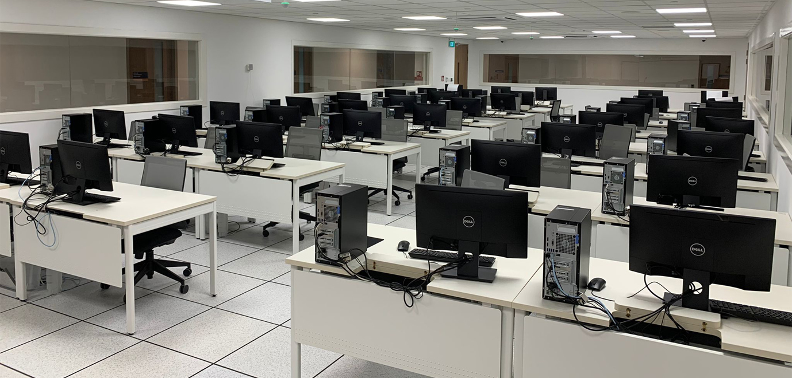

Embrace the opportunity to enter Bahari Data Research House, where a world of data research awaits you with open arms

Applied
The Applied Bahari Big Data, Machine Learning, Deep Learning; Laboratory invites you into a realm where innovation and technology intersect. As you step inside, you are greeted by a welcoming atmosphere that buzzes with excitement. This dynamic space serves as a hub for the practical application of machine learning, where ideas flourish and boundaries are pushed. Here, talented minds converge to collaborate, experiment, and unlock the potential of cutting-edge algorithms. From data analysis to predictive modeling, the laboratory is a playground for exploring the endless possibilities of artificial intelligence. Immerse yourself in this transformative environment and witness firsthand how machine learning is shaping the future
An accident is the cry of a lifetime. The role of traffic signs is most important in preventing or mitigating accidents. In many cases, while driving, traffic signs are not visible in the conventional approach; if traffic sign detection and recognition can alert the driver of important sign guidance ahead, it will help in accident mitigation. Traffic sign recognition plays a monumental role in expert systems, such as traffic assistance driving systems and automatic driving systems. The prime purpose of this paper is to design and identify a computer-based system that can spontaneously detect the direction of a road sign. For this research work, we have created our own dataset, which is called the Bangladeshi Traffic Sign Recognition Benchmark (BTSRB) dataset. The dataset, BTSRB, was created by capturing images from different angles and under different parameters and conditions. A total of 7320 images were collected to create this comprehensive database. This dataset called BTSRB all the images collected from Bangladesh. In this paper, we used five different types of models (CNN, Inception V3, MobileNetV2, ResNet50, and VGG16), which are pre-trained on the ImageNet dataset. Later, we finetuned the pre-trained model and used transfer learning. The main challenge of this research is collecting datasets from a country like Bangladesh, where no recognized dataset is available. When compared to another model, the accuracy of this model is greater than 91%. This paper emphasizes the significance of traffic sign recognition in expert systems and the necessity for a well-established dataset in nations where such resources are not readily available. here.

Read the paper here. Consequat semper viverra nam libero justo laoreet. Commodo odio aenean sed adipiscing diam donec.

Tristique senectus et netus et malesuada. Sed viverra tellus in hac habitasse platea dictumst vestibulum rhoncus. Read it here.

Aecenas consectetur vestibulum orci ut vulputate. Aenean cursus finibus pulvinar here.

Read the paper here

Aenean posuere, nulla ut placerat fringilla, dolor dolor pellentesque metus. Read the paper here.